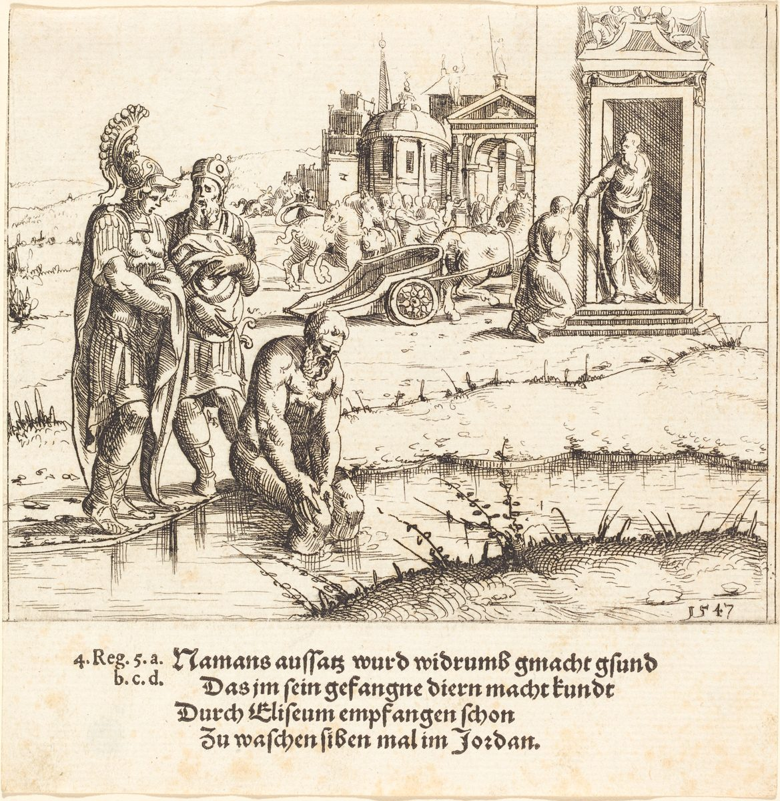

2 Reyes 5 — La Traducción Mister

2 Reyes 5:9–14. El aguafuerte está fechado en 1547 y rotulado debajo con cuatro líneas de verso alemán y la referencia «4. Reg. 5» (el cuarto libro de los Reyes de la Vulgata es nuestro 2 Reyes). En una sola lámina muestra a Naamán a la puerta de la casa, donde está Eliseo, y a Naamán en el río. El hebreo dice que Eliseo envió un mensajero y no sale (5:10); la escena de la puerta es la manera que tiene el artista de poner dos momentos de la historia en una sola imagen.

Notas del traductor — versículo por versículo
⭐ «Por medio de él Jehová había dado salvación a Aram». El versículo lo dice sin rodeos, de un hombre a quien el mismo versículo llama «uno con la enfermedad escamosa», y no dice cómo. Radak da dos respuestas antiguas: el Targum, «por su mano Jehová obró victoria para los hombres de Aram», y un midrás según el cual este es el hombre que tensó el arco al azar e hirió a Acab. El hebreo de 1 Reyes 22:34 (ya en estas páginas) dice «un hombre tensó el arco en su inocencia» y no da nombre. La RV60 y la TNM 1987 tienen «salvación», la RV 1909 «salvamento» y la NVI «victorias». «Honrado» traduce un modismo hebreo, nesu panim, «alzado de rostro». Rashi toma el capítulo como el siguiente de una lista de los milagros hechos por medio de Eliseo. Josefo pasa del aceite de la viuda (Antigüedades 9.47–50) a la emboscada de los arameos (9.51), y una búsqueda en su griego del nombre de Naamán y del de Giezi no halla ninguno de los dos.
⚠ «Uno con la enfermedad escamosa». La palabra hebrea es metsora, de una raíz que está en los versículos 1, 3, 6, 7, 11 y 27 de este capítulo, y mitsar’ato, «de su enfermedad escamosa», está en tres versículos de la Biblia hebrea: los versículos 3, 6 y 7, todos aquí. El griego de la tradición del Vaticano tiene lelepromenos en el versículo 1 y lepra en el 3. La RV 1909, la RV60 y la TNM 1987 tienen «leproso», y la NVI «enfermedad en la piel». Esta página conserva la enfermedad escamosa que usa en Levítico. Levítico 13:46 (ya en estas páginas) dice de quien la tiene: «Vivirá solo; fuera del campamento estará su morada». Nada en este capítulo aparta a Naamán de nadie: su propio rey lo envía, su esposa tiene una criada, el rey de Israel lee su carta, y un mensajero sale a él a la puerta. Levítico es la ley de Israel, y el versículo no dice qué hace Aram.
La niña. No tiene nombre. Bandas de merodeadores de Aram «habían salido» y la habían tomado «de la tierra de Israel»; el hebreo la llama una niña pequeña, na’arah ketannah, y dice que estaba «delante de» la mujer de Naamán. «Delante de», lifnei o lefanav, está en siete de los veintisiete versículos del capítulo (1, 2, 3, 15, 16, 23 y 27), y su deseo lo usa: «¡Ojalá mi señor estuviera delante del profeta que está en Samaria!». La TNM 1987 tiene «estuviera delante del profeta», la RV60 «rogase mi señor al profeta», y la NVI «fuera a ver al profeta». Su palabra para «ojalá», achalai, está en dos versículos de la Biblia hebrea, este y Salmo 119:5 (ya en estas páginas); los otros dos versículos que escriben las mismas letras, 1 Crónicas 2:31 y 11:41, tienen el nombre Ahlai. Rashi oye en ella una oración y le pone al lado «y Moisés suplicó» (Éxodo 32:11). Ella no nombra a Eliseo, y no dice qué puede hacer.
⭐ «Lo recogería de su enfermedad escamosa». El verbo es asaf, «recoger», y está en los versículos 3, 6, 7 y 11, siempre para la cura. Es el verbo de Números 12:14–15 (ya en estas páginas), donde Miriam es encerrada fuera del campamento siete días y luego «recogida de nuevo». Si el hebreo aquí mantiene el campamento a la vista o solo quiere decir «quitar» queda abierto; esta página conserva la única palabra, para que cuatro versículos se lean como uno. El griego de la tradición del Vaticano tiene la misma imagen en un compuesto, aposynaxei, «recoger lejos». La RV 1909 y la RV60 tienen «sanaría», la NVI «sanaría» también, y la TNM 1987 «le daría recobro». En el versículo 4 quien entra y cuenta a «su señor» no se nombra: el hebreo dice solo «él», y el griego tiene «ella». La RV60 y la NVI dicen «Naamán», y la TNM 1987 «alguien».
Los regalos y la carta. El rey de Aram envía diez talentos de plata, seis mil «de oro» y diez mudas de ropa, y una carta. El hebreo no tiene sustantivo después de «seis mil de oro»: la RV 1909, la RV60 y la TNM 1987 tienen «piezas», y la NVI «siclos». La carta no pide una cura. Dice «te he enviado a Naamán mi siervo, y tú lo recogerás de su enfermedad escamosa»: un resultado dicho como si fuera una orden, en el verbo del versículo 3. En este capítulo no se nombra a ninguno de los dos reyes; 2 Reyes 3:1 (ya en estas páginas) tiene a Joram hijo de Acab reinando sobre Israel en Samaria.
⭐ «¿Soy yo Dios, para matar y para dar vida?». El rey oye la carta como una exigencia de lo que pertenece a Dios, y lo dice con palabras que Israel ya tiene de la propia boca de Dios: «Yo hago morir, y yo hago vivir» (Deuteronomio 32:39) y, en el cántico de Ana, «Jehová hace morir y hace vivir» (1 Samuel 2:6), ambos ya en estas páginas. Rashi solo anota que la primera letra de «¿Soy yo Dios?» lleva la vocal que marca una pregunta. La RV60 tiene «¿Soy yo Dios, que mate y dé vida?», la TNM 1987 «¿Soy yo Dios, para dar muerte y conservar vivo?» y la NVI «¿Y acaso soy Dios, capaz de dar vida o muerte?».
«Buscando un pretexto contra mí». El rey termina diciendo a los que lo rodean que «sepan, por favor, y vean»; ambos verbos están en plural. El verbo hebreo mit’anneh, «busca un pretexto», está en un solo versículo de la Biblia hebrea; el único otro versículo que escribe las mismas letras, Isaías 34:4, las tiene como «de la higuera». La RV 1909 y la RV60 tienen «busca ocasión contra mí», que es lo más cercano; la TNM 1987 tiene «anda buscando una riña conmigo» y la NVI «me está buscando pleito». Rasga sus vestidos, como Eliseo rasgó los suyos cuando Elías fue arrebatado (2 Reyes 2:12, ya en estas páginas); el versículo siguiente tiene a Eliseo enterándose.
⭐ «Hay un profeta en Israel». Eliseo oye que el rey ha rasgado sus vestidos (el versículo no dice quién se lo dijo) y envía a decir: «¿Por qué has rasgado tus vestidos? Venga ahora a mí, y sabrá que hay un profeta en Israel». Naamán viene «con sus caballos y con sus carros» y se detiene a la puerta, y Eliseo no sale; envía «un mensajero», que no se nombra: «Ve, y lávate siete veces en el Jordán, y tu carne volverá a ti, y sé limpio». La última palabra es una orden, utehar, como lo es el «Lávate, y sé limpio» de los siervos en el versículo 13. La RV 1909 y la RV60 tienen «serás limpio», la NVI «quedarás limpio» y la TNM 1987 «sé limpio». Marcos 1:41 (ya en estas páginas) tiene «sé limpio» de labios de Jesús, en griego.
Cinco verbos, y ninguno es «lavar». Naamán tenía una imagen: Eliseo «saldrá sin falta a mí, y se pondrá de pie, e invocará el nombre de Jehová su Dios, y agitará su mano sobre el lugar, y recogerá al que tiene la enfermedad escamosa». Son cinco verbos, y Eliseo es el sujeto de todos; lo que se le envía es una orden con Naamán como sujeto. La RV 1909 tiene «alzará su mano, y tocará el lugar», la RV60 «alzará su mano y tocará el lugar», la NVI «con un movimiento de la mano me sanaría la piel» y la TNM 1987 «moverá su mano de acá para allá sobre el lugar». Naamán ya tiene el nombre, y se lo da al Dios de Eliseo: «Jehová su Dios».
⚠ «Amaná y Farfar». Ketiv y qere se encuentran de nuevo en la línea hebrea, que imprime avanah y, a su lado, amanah. Radak dice que el nombre se escribe con bet y se lee con mem, y que el río se llamaba de ambas maneras. Esta página imprime la lectura, Amaná. El griego de la tradición del Vaticano tiene Abana y Pharphar, y las cuatro versiones españolas del estante imprimen la forma escrita: la RV 1909 y la RV60 tienen «Abana», y la NVI y la TNM 1987 «Abaná». La comparación de Naamán es con «todas las aguas de Israel»; no nombra el Jordán, y Eliseo sí lo hizo. Véanse Amaná y Farfar y Damasco.
«Lávate» y «se sumergió». Eliseo, Naamán y los siervos dicen todos rachats, «lavar» (versículos 10, 12 y 13); el narrador dice tabal, «sumergir», una sola vez, en el versículo 14. La RV 1909 tiene «zambullóse», la RV60 «se zambulló», la NVI «se sumergió» y la TNM 1987 «sumergirse», donde en el versículo 10 tiene «bañarte». El griego de la tradición del Vaticano tiene ebaptisato, «se bautizó», en el versículo 14 y lousai, «lávate», en el 10. «Siete veces» es la palabra de Eliseo en el versículo 10 y la del narrador en el 14, con las mismas palabras hebreas, que están en dieciocho versículos de la Biblia hebrea, así que el número no es lo extraño. Levítico 14:7 (ya en estas páginas) hace que el sacerdote rocíe «siete veces al que ha de purificarse de la enfermedad escamosa».
«Padre mío» y «la palabra». Los siervos dicen: «Padre mío, si el profeta te hubiera dicho una cosa grande, ¿no la harías?». Lo llaman «padre mío» como Eliseo clamó «padre mío, padre mío» tras Elías (2 Reyes 2:12, ya en estas páginas). El sustantivo hebreo para «cosa» es davar, y es el sustantivo del versículo 14, «conforme a la palabra del varón de Dios»: la davar grande que habría hecho es la davar que hace. La RV60 tiene «alguna gran cosa» y luego «conforme a la palabra», y la TNM 1987 «una cosa grande» y «conforme a la palabra». Su carne «volvió como la carne de un niño pequeño»; na’ar qaton está en cinco versículos de la Biblia hebrea: 1 Samuel 20:35, 1 Reyes 3:7 (donde Salomón se llama a sí mismo, como imprime esta página, «un jovencito»), 1 Reyes 11:17, Isaías 11:6 y este. El verbo de «volvió» es shuv, el verbo de la mano de Moisés: «había vuelto a ser como el resto de su carne» (Éxodo 4:7, ya en estas páginas). La RV60 tiene «se volvió como la carne de un niño», la NVI «su piel se volvió como la de un niño» y la TNM 1987 «como la carne de un muchachito».
⭐ «Volvió al varón de Dios». En el versículo 14 su carne «volvió»; en el 15 él «volvió», con el mismo verbo hebreo, vayashav, primero la carne y luego el hombre. Viene con «todo su campamento» y «se puso delante de él»: el deseo de la niña en el versículo 3, que su señor estuviera «delante del profeta», ya está cumplido. Su palabra es «sé que no hay Dios en toda la tierra sino en Israel». La RV60 tiene «no hay Dios en toda la tierra, sino en Israel», la NVI «no hay Dios en todo el mundo, excepto en Israel» y la TNM 1987 «no hay Dios en ninguna parte de la tierra sino en Israel». Luego se llama a sí mismo «tu siervo», como lo hace cinco veces en los versículos 15 a 18.
«Toma una bendición de tu siervo». La palabra hebrea es berakhah, «bendición», y es también lo que Jacob llama su regalo a Esaú: «Toma, te ruego, mi bendición» (Génesis 33:11). La RV 1909 y la RV60 tienen «presente», la NVI «regalo» y la TNM 1987 «un regalo de bendición». Génesis 33:11 sigue: «Y le insistió, y lo tomó»; la frase hebrea de «insistió», vayiftsar-bo, está en tres versículos de la Biblia hebrea: Génesis 33:11, Jueces 19:7 y el versículo 16 de este capítulo, donde Naamán insiste y Eliseo rehúsa. La RV60 tiene «le instaba», la RV 1909 «importunándole», la NVI «insistió» y la TNM 1987 «instarlo».
«Vive Jehová, delante de quien estoy». El juramento de Eliseo es el de Elías: asher amadeti lefanav está en cuatro versículos de la Biblia hebrea, 1 Reyes 17:1 y 18:15, luego 2 Reyes 3:14 y este (todos ya en estas páginas). Elías lo jura dos veces y Eliseo dos, aquí con «no tomaré» (versículo 16). La RV 1909 tiene «que no lo tomaré», la RV60 «que no lo aceptaré», la NVI «no voy a aceptar nada» y la TNM 1987 «yo ciertamente no lo aceptaré».
⚠ «La carga de un par de mulas de tierra». El hebreo tiene «una carga, un par de mulas, tierra». La RV60 tiene «la carga de un par de mulas», la NVI «dos cargas de esta tierra» y la TNM 1987 «la carga de un par de mulos». El griego de la tradición del Vaticano añade una cláusula, «y tú me darás de la tierra roja», que esta página anota y no adopta. El versículo da su propia razón: de ahora en adelante Naamán no ofrecerá «holocausto ni sacrificio a otros dioses, sino a Jehová». Un lector puede pensar en el altar de tierra de Éxodo 20:20 (20:24 en las Biblias inglesas, ya en estas páginas), pero el versículo no dice que sea por eso que la quiere.
⚠ «La casa de Rimón». Naamán pide perdón por lo que aún no ha hecho: cuando su señor entre en la casa de Rimón y se apoye en su mano, él se inclinará allí también. «La casa de Rimón» está en un solo versículo de la Biblia hebrea, este, y tres veces en él. Rashi dice solo «nombre de un ídolo», y el rey de Aram de 1 Reyes 15:18 (ya en estas páginas) es Ben-adad hijo de Tabrimón, un nombre que termina con la misma palabra. «Se apoya en mi mano» se dice de nuevo, con «su mano», de un rey y su oficial en 2 Reyes 7:2 y 7:17 (ya en estas páginas). El único verbo para «inclinarse» está tres veces en el hebreo; la RV60 tiene «adorar» para el primero y «inclinare» para el segundo, donde la TNM 1987 tiene «inclinarse» para los tres. La TNM 1987 tiene «la casa de Rimón», y la RV60, la RV 1909 y la NVI «el templo». El griego de la tradición del Vaticano hace del ruego una afirmación, «el Señor tendrá misericordia». La línea hebrea imprime también un na desnudo, «por favor», sin vocales y sin lectura a su lado, en la última cláusula del versículo 18: la TNM 1987 tiene «por favor» allí, y la RV60 y la RV 1909 no.
Ve en paz, sin sí ni no. Eliseo ni lo concede ni lo rehúsa. Lekh leshalom es lo que Jetro dice a Moisés (Éxodo 4:18) y Jonatán a David (1 Samuel 20:42), ambos ya en estas páginas, y el versículo no dice qué piensa Eliseo. Luego Naamán se va «un trecho de tierra», kivrat eretz: kivrat está en tres versículos de la Biblia hebrea, y «kivrat eretz» en dos, Génesis 48:7 y este. La RV 1909 tiene «como el espacio de una milla». La NVI tiene «cierta distancia». La TNM 1987 tiene «por un buen trecho de tierra». La RV60 tiene «como media legua de tierra».
⭐ «Vive Jehová, que correré tras él y tomaré de él algo». Giezi se nombra aquí por primera vez en este capítulo, y el hebreo le da el título entero: «el criado de Eliseo el varón de Dios». Su juramento tiene la forma del del versículo 16: Eliseo jura «Vive Jehová… no tomaré», y Giezi jura «Vive Jehová… tomaré». El verbo es laqach, «tomar», y está en los versículos 5, 15, 16, 20, 23, 24 y 26 de este capítulo, desde el regalo que trae Naamán hasta el veredicto del versículo 26. «Algo», me’umah, es una palabra de la despedida de Samuel, donde el pueblo dice «no has tomado nada de mano de ningún hombre» (1 Samuel 12:4, ya en estas páginas). El plan de Giezi es tomar me’umah «de él». La RV 1909 y la RV60 tienen «estorbó», la TNM 1987 «le ha perdonado gastos» y la NVI «ha sido demasiado bondadoso». También lo llama «este Naamán el arameo», y la RV60 tiene «este sirio Naamán».
Se bajó del carro. Naamán «vio a uno que corría tras él», y el hebreo dice que cayó del carro a su encuentro: vayippol, el verbo de Rebeca cuando vio a Isaac y «se bajó del camello» (Génesis 24:64). El comandante de un ejército se baja por el criado de un profeta. Pregunta hashalom, «¿Va bien?», y Giezi responde shalom, «Bien». Shalom está en tres versículos de este capítulo y en ningún otro: el versículo 19, el «Ve en paz» de Eliseo, el 21, y el 22, que es una mentira.
Lo que dice y lo que da Naamán. «Mi señor me ha enviado, diciendo: Mira, ahora mismo han venido a mí desde la región montañosa de Efraín dos jóvenes de los hijos de los profetas; dales, por favor, un talento de plata y dos mudas de ropa». La petición es un talento y dos mudas; Naamán responde: «Consiente, toma dos talentos». La RV60 tiene «Te ruego que tomes dos talentos», la NVI «Por favor, llévate dos talentos» y la TNM 1987 «Anda, toma dos talentos». «Dos» está en el versículo 23 cinco veces en hebreo: dos talentos, dos talentos de plata, dos bolsas, dos mudas de ropa, dos de sus criados. Los criados de Naamán lo llevan «delante de él», lefanav, la palabra del versículo 3. La frase de su insistencia, vayifrats-bo, «y le insistió», está en tres versículos de la Biblia hebrea: 2 Samuel 13:25, 2 Samuel 13:27 y este. Es un segundo verbo, con las mismas tres letras en otro orden, distinto del vayiftsar-bo del versículo 16. La RV60 tiene «le insistió» en el versículo 23, la RV 1909 «le constriñó» y la TNM 1987 «siguió instándolo»; para el versículo 16 véase la nota anterior.
⚠ «El Ofel». Giezi «llegó al Ofel, y los tomó de su mano, y los depositó en la casa; y despidió a los hombres». Ha-ofel es «el montículo», con artículo. La NVI tiene «la colina», la TNM 1987 «Ofel», y la RV 1909 y la RV60 «un lugar secreto». El Targum, en palabras de Rashi, tiene «un lugar escondido», y el griego de la tradición del Vaticano tiene to skoteinon, «el lugar oscuro». El versículo no dice dónde estaba el Ofel; dice solo que despidió a los hombres que llevaban la carga, y la puso en la casa, y entró a su señor.
⚠ «¿De dónde, Giezi?» La línea hebrea imprime dos formas para la pregunta, me’an como está escrita y me’ayin como se lee, el último ketiv y qere del capítulo; la lectura es «de dónde». Giezi responde: «Tu siervo no fue a ninguna parte», con las palabras anah va’anah, «adónde y adónde». Es el sexto «tu siervo» del capítulo, y el primero en boca de alguien que miente. La RV 1909 tiene «Tu siervo no ha ido á ninguna parte», la RV60 «Tu siervo no ha ido a ninguna parte», la NVI «Su servidor no ha ido a ninguna parte» y la TNM 1987 «Tu siervo no fue a ninguna parte».
⭐ «¿No fue mi corazón?» En 2 Reyes 4:27 (ya en estas páginas) Eliseo dijo de la sunamita: «Jehová me lo ha ocultado y no me lo ha declarado». Aquí el versículo no le da informante, y dice solo «mi corazón fue». El hebreo no tiene «contigo». La RV 1909 tiene «¿No fué también mi corazón», la RV60 «¿No estaba también allí mi corazón», la NVI «¿No estaba yo presente en espíritu» y la TNM 1987 «¿No te acompañó mi corazón mismo». El griego de la tradición del Vaticano tiene «contigo», meta sou. Luego enumera ocho cosas: plata, vestidos, olivares, viñas, ovejas, bueyes, siervos y siervas. Giezi tomó dos de ellas. Rashi lee la lista como lo que el dinero compraría.
⭐ «Se te pegará a ti y a tu descendencia para siempre». El verbo es davaq, y la palabra que Giezi tomó, me’umah, está en Deuteronomio 13:18 (ya en estas páginas) con el mismo verbo: «nada de lo dado por entero a la destrucción se pegará a tu mano». El veredicto no es una enfermedad nueva: es «la enfermedad escamosa de Naamán», la misma con que se abrió el capítulo, y ha de pegarse al criado que tomó su plata y a su descendencia. La RV 1909, la RV60, la NVI y la TNM 1987 tienen «se te pegará», y dicen «simiente», «descendencia», «descendientes» y «prole». Las últimas palabras del capítulo son «uno con la enfermedad escamosa, blanco como la nieve». Las palabras hebreas de la enfermedad escamosa «como la nieve» están en tres versículos: la mano de Moisés (Éxodo 4:6), Miriam (Números 12:10) y Giezi, todos ya en estas páginas. En los dos primeros queda deshecha: la mano de Moisés «había vuelto a ser como el resto de su carne», y Miriam es «recogida de nuevo». Aquí el capítulo termina con él saliendo, y no dice qué fue de él. Lucas 4:27 (ya en estas páginas) hace decir a Jesús que de los muchos leprosos que había en Israel en tiempo de Eliseo «ninguno de ellos fue limpiado, sino solo Naamán el sirio»; Lucas 17:18 lo hace llamar «este extranjero» al único de diez que volvió.
Patrones que vale la pena llevar adelante
Dónde esta traducción mantiene las palabras exactas y distintas: «uno con la enfermedad escamosa» y «de su enfermedad escamosa», como en Levítico 13 y Números 12; «recoger», un solo verbo en los versículos 3, 6, 7 y 11, como en Números 12:14–15; «delante de», para el deseo de la niña y para el estar de pie de Naamán; «lávate» para lo que dice Eliseo y «se sumergió» para lo que hace Naamán; «y sé limpio», una orden; «la palabra del varón de Dios»; «un niño pequeño»; «toma una bendición», como en Génesis 33:11; «Vive Jehová, delante de quien estoy», como en 1 Reyes 17:1; «instaba» en el versículo 16 e «insistió» en el 23, dos verbos distintos; «Bien» para shalom en los versículos 21 y 22; «se bajó», como en Génesis 24:64; «se pegará», como en Deuteronomio 13:18; y «blanco como la nieve». El hebreo escrito y el leído se registran en los versículos 12 y 25, y el na desnudo en el 18.
Ecos pagados. La muerte de Acab por una flecha disparada «en su inocencia» (1 Reyes 22:34); el campamento y el recoger (Números 12:14–15); la ley del leproso fuera del campamento (Levítico 13:46) y las siete aspersiones (Levítico 14:7); «Yo hago morir, y yo hago vivir» (Deuteronomio 32:39; 1 Samuel 2:6); «padre mío, padre mío» (2 Reyes 2:12); la mano devuelta (Éxodo 4:6–7); el juramento de Elías y Eliseo (1 Reyes 17:1; 1 Reyes 18:15; 2 Reyes 3:14); la bendición de Jacob (Génesis 33:11); el altar de tierra (Éxodo 20:20); Tabrimón (1 Reyes 15:18); «Ve en paz» (Éxodo 4:18; 1 Samuel 20:42); Rebeca bajándose del camello (Génesis 24:64); el «nada de mano de ningún hombre» de Samuel (1 Samuel 12:4); «nada de lo dado por entero a la destrucción se pegará a tu mano» (Deuteronomio 13:18); el «Jehová me lo ha ocultado» de Eliseo (2 Reyes 4:27); «ninguno de ellos fue limpiado, sino solo Naamán» (Lucas 4:27); y el único extranjero que volvió (Lucas 17:15–18).
Ecos plantados. El rey que se apoya en la mano de un oficial (2 Reyes 7:2, 17, ya en estas páginas); Giezi todavía «el criado del varón de Dios», contando a un rey «todas las grandes cosas que ha hecho Eliseo» (2 Reyes 8:4–5, ya en estas páginas); y Eliseo en Damasco, con Ben-adad rey de Aram enfermo (2 Reyes 8:7, ya en estas páginas).
Siguiente en este libro: 2 Reyes 6 — un hacha de hierro flota, el ejército arameo es herido de ceguera y alimentado en Samaria, y una hambruna en el asedio lleva a dos mujeres ante el rey.